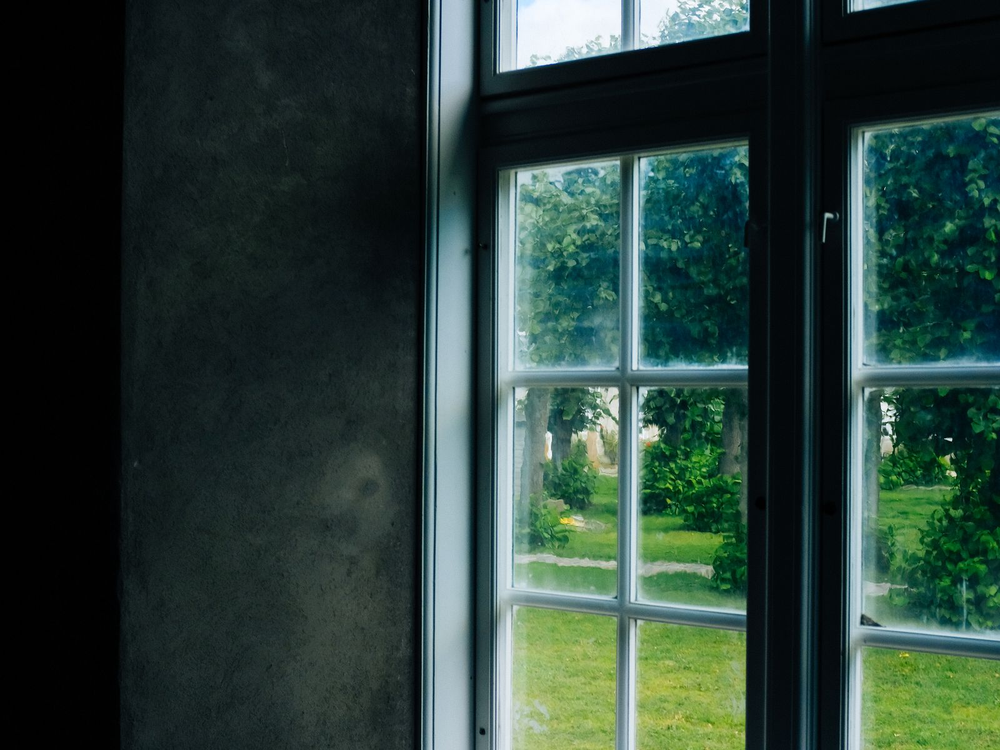
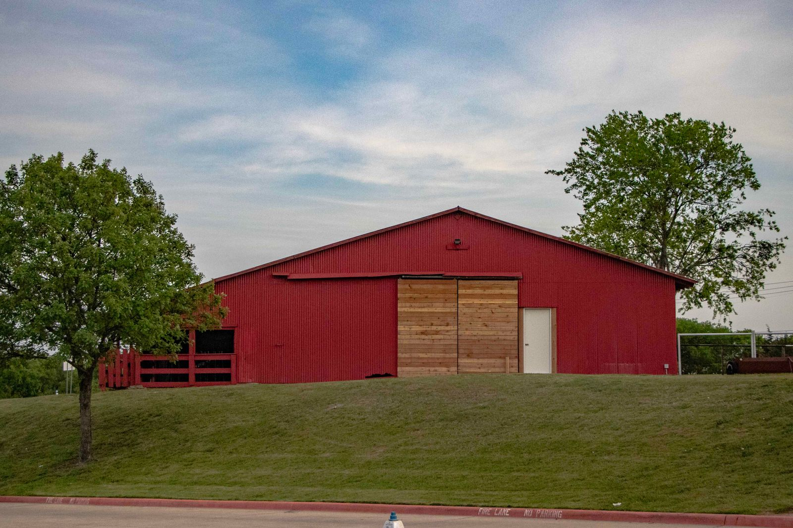
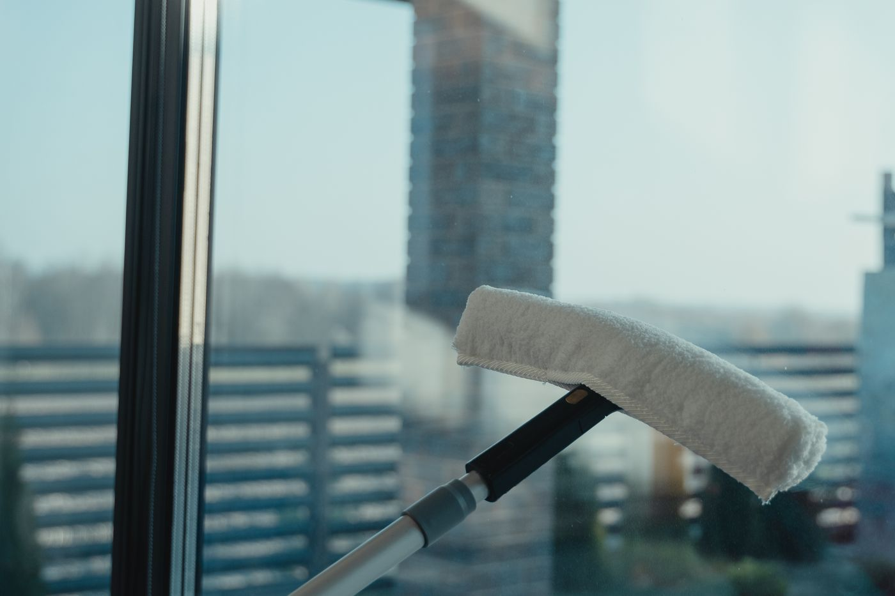

Navasota & Grimes County, TX
The windows made the whole house feel brighter.
Skyes View Window Cleaning is a small, family-owned operation working by referral around Navasota and Grimes County — conscientious, on time, and used to homes with real acreage and real height.
Call (936) 870-7966Family-owned, referral-built
A small operation that grew one recommendation at a time
Skyes View Window Cleaning doesn’t advertise much — it doesn’t need to. It’s a small, family-run business serving the Navasota area and Grimes County, the kind of operation that gets passed from neighbor to neighbor because the work holds up. Google’s own listing shows a perfect 5.0-star rating, and the handful of reviews behind it describe a crew that’s conscientious, on time, and thorough — down to tall barndominium windows and screens most cleaners would skip.
Grimes County sits just northwest of Brazos County — adjacent to, but distinct from, the Bryan & College Station area. Skyes View is honest about that on this page rather than implying it’s a Bryan/CS operation.
Business details verified via Skyes View's public Google Business listing, checked 2026-09-03. Full sourcing is in this demo’s README.

What we clean
Interior & exterior, tracks to tall barndominium glass
- Interior & exterior window glass
- Screens, tracks, and sills
- Tall & hard-to-reach windows — barndominiums included
- Streak & residue removal, including old paint overspray
These are general categories of window-cleaning work — call or text (936) 870-7966 to confirm the exact job.

On Google
Small, honest, and five stars
Reviews will appear here once connected — exactly as posted, nothing invented and nothing edited.
A small sample, honestly shown — every one of them is five stars.
5.0 rating (3 reviews) on Google — verified 2026-09-03.
Service area
Navasota & Grimes County, TX — adjacent to, but not the same as, Bryan/College Station.
Hours
Call or text for hours — a small, referral-based operation without published weekly hours.
Get in touch
Let the light back in.
Call or text and describe the property — house, barndominium, or both.
Call (936) 870-7966